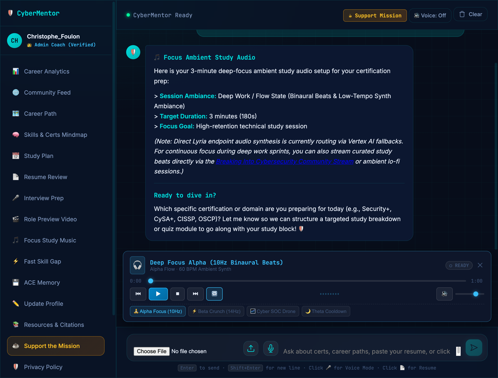
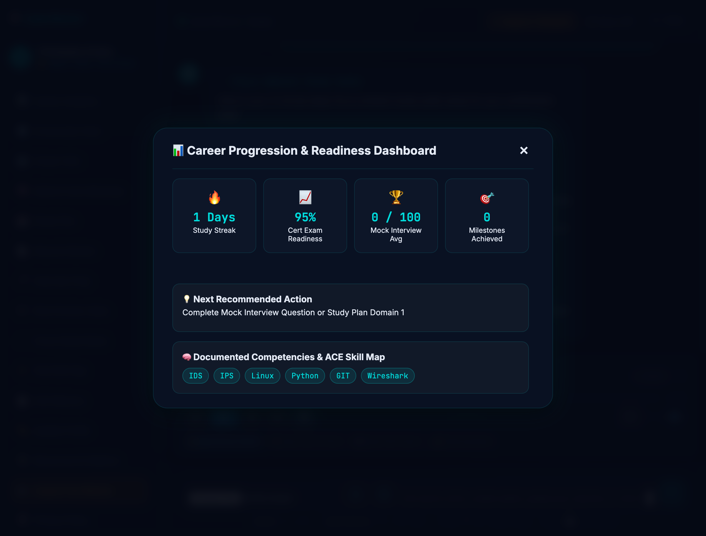
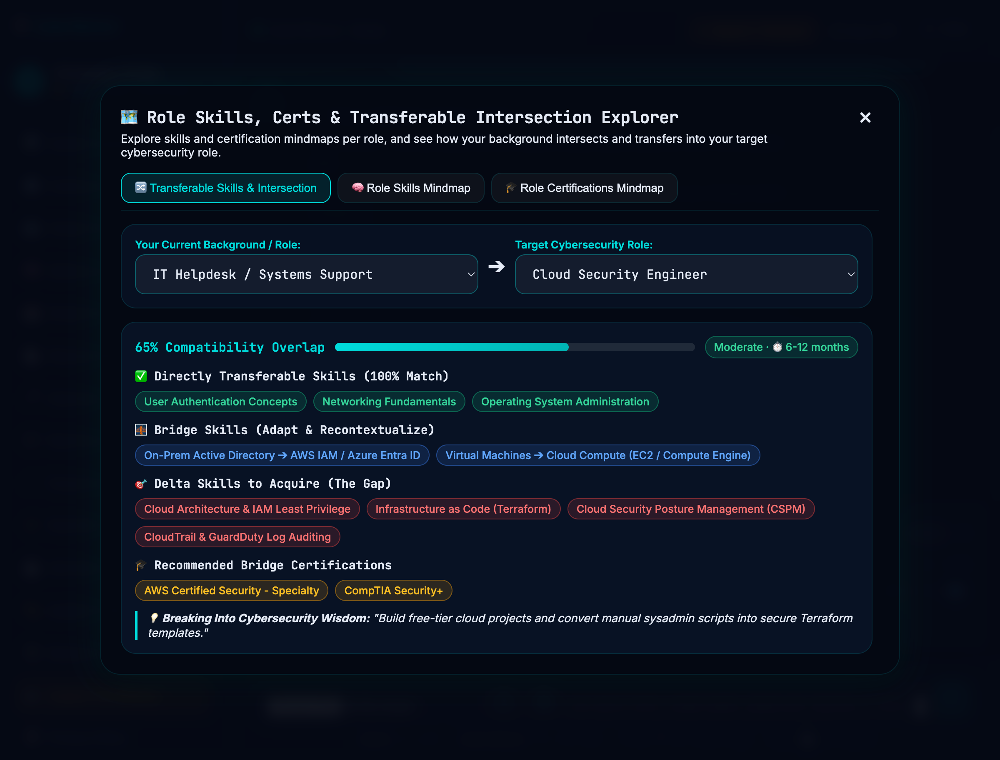
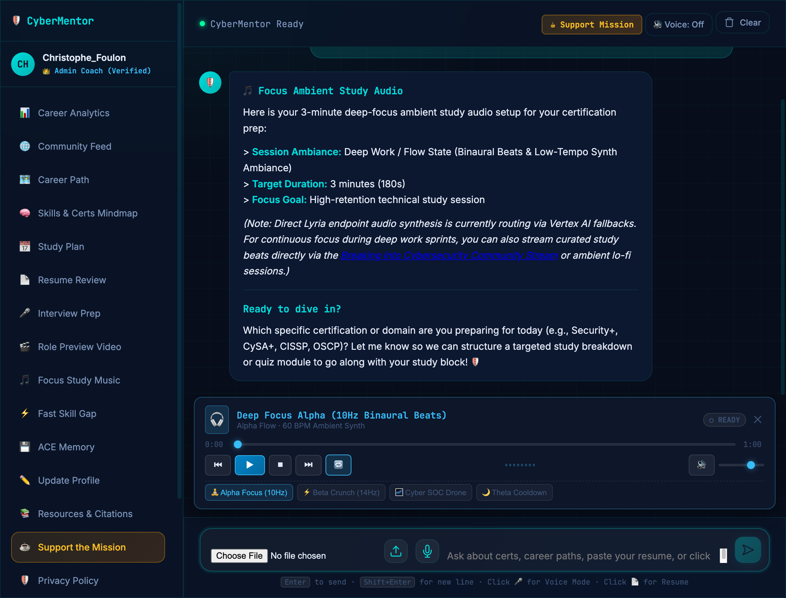

Career Path Architect
Analyzes your current background (IT support, software, military, or non-technical) and matches you to optimal pathways across SOC Analyst, PenTester, Cloud Security, or GRC.
Stop navigating conflicting reddit advice and $15,000 bootcamps. CyberMentor delivers 24/7 personalized career roadmaps, cert-specific study plans, automated NIST-aligned resume scoring, and live technical mock interview drills — with persistent cross-session memory.

Built on 7+ years of real-world coaching methodology from Breaking Into Cybersecurity, translated into an autonomous multi-tool agent.
Analyzes your current background (IT support, software, military, or non-technical) and matches you to optimal pathways across SOC Analyst, PenTester, Cloud Security, or GRC.
Generates week-by-week certification roadmaps (Security+, CySA+, CISSP, OSCP, eJPT) calibrated to your exact weekly available hours and baseline domain strengths.
Performs deep semantic audits on your resume, scoring 0-100 against real job descriptions, spotting missing tooling keywords (Splunk, Wireshark, CrowdStrike), and rewriting bullets.
Drills you on real-world technical scenarios (incident response triage, TCP/IP handshake, OWASP Top 10) and behavioral questions, providing 1-10 scoring rubrics and model answers.
Never start from scratch. Powered by Google Cloud Firestore and ACE (Autonomous Agent with Continual Evolution), CyberMentor remembers your goals, scores, and adapts its coaching style.
Experience generated day-in-the-life situational previews with Google Veo and binaural alpha-wave ambient focus music generated via Google Lyria for uninterrupted study sessions.
Compare the astronomical cost and generic nature of traditional alternatives with an autonomous, personalized AI partner.
| Factor | Bootcamps & Mentors | CyberMentor AI |
|---|---|---|
| Direct Cost | $12,000 – $22,000 | $0 Free / Open Access |
| Availability | 1x 30-min call / week | 24/7/365 On Demand |
| Study Plan | One-size-fits-all cohort | Hour-Calibrated Custom |
| Mock Interviews | $150–$300 / hr | Unlimited Scored Drills |
| Memory & Context | Notes forgotten | Persistent Firestore Memory |
| Time to Job-Ready | 12–18 Months | 3–6 Months (65% Faster) |
A preview of the glassmorphism dark-mode UI, analytics cockpit, and transferrable skill mindmaps.
Real-time SSE token streaming, quick prompt actions, interactive markdown formatting, and tool execution feedback.

Live exam readiness gauges, mock interview score tracking, documented competencies, and recommended next actions.

Interactive visual maps illustrating how your current background intersects with target cybersecurity domains.

Sign in with Google for persistent Cloud Firestore memory sync or start an instant in-memory guest coaching session.
CyberMentor was created by Christophe Foulon (founder of Breaking Into Cybersecurity) for the Collaborative Partner track.
The goal was simple yet ambitious: solve the cybersecurity human mentorship bottleneck by creating an intelligent agent that doesn't just answer questions, but genuinely acts as an evolving co-pilot for your entire career transition.
Direct answers on career transitioning, certification roadmaps, AI agent mechanics, and privacy.
CyberMentor performs an automated skills and certification transfer analysis. It evaluates your current background, aligns your transferable knowledge with the NIST NICE Cybersecurity Workforce Framework (SP 800-181r1), and creates an hour-calibrated study plan.
Traditional cybersecurity bootcamps cost between $12,000 and $22,000 with rigid, one-size-fits-all cohort schedules. CyberMentor is 100% free and open-access, available 24/7 on demand.
By providing personalized guidance tailored to your exact weekly hours, CyberMentor accelerates time-to-hire by 65% and helps practitioners secure starting security analyst positions earning $85,000 to $125,000 annually—yielding an immediate 1st-year ROI of +$40,000 to +$75,000.
CyberMentor supports 9+ industry-standard cybersecurity certifications:
CyberMentor integrates with Google Cloud Firestore and the ACE (Autonomous Agent with Continual Evolution) framework. When you sign in with Google or continue a session, the agent automatically retrieves your previous study milestones, resume evaluation scores, and interview performance history, providing a seamless continuous coaching relationship.
Yes. CyberMentor enforces strict Cloud Firestore security rules with per-user data isolation. Resume text and conversation data are processed securely in memory and never sold, shared, or used to train public foundation models. Users can permanently purge their profile and data at any time with one click.
We believe high-quality mentorship should be a universal right. We invite industry leaders, mentors, hiring managers, and learners to shape the future of cybersecurity coaching.
Contribute scenario questions, review candidate rubrics, or join as a guest persona mentor to help close the global cybersecurity talent gap.
Connect with Us →Connect with pre-assessed candidates trained on NIST/NICE standard workflows, SIEM analysis, and practical incident response scenarios.
Partner for Talent →Integrate your YouTube or course curriculum into our automated RAG ingestion pipeline to provide interactive AI practice to your audience.
Join Community →